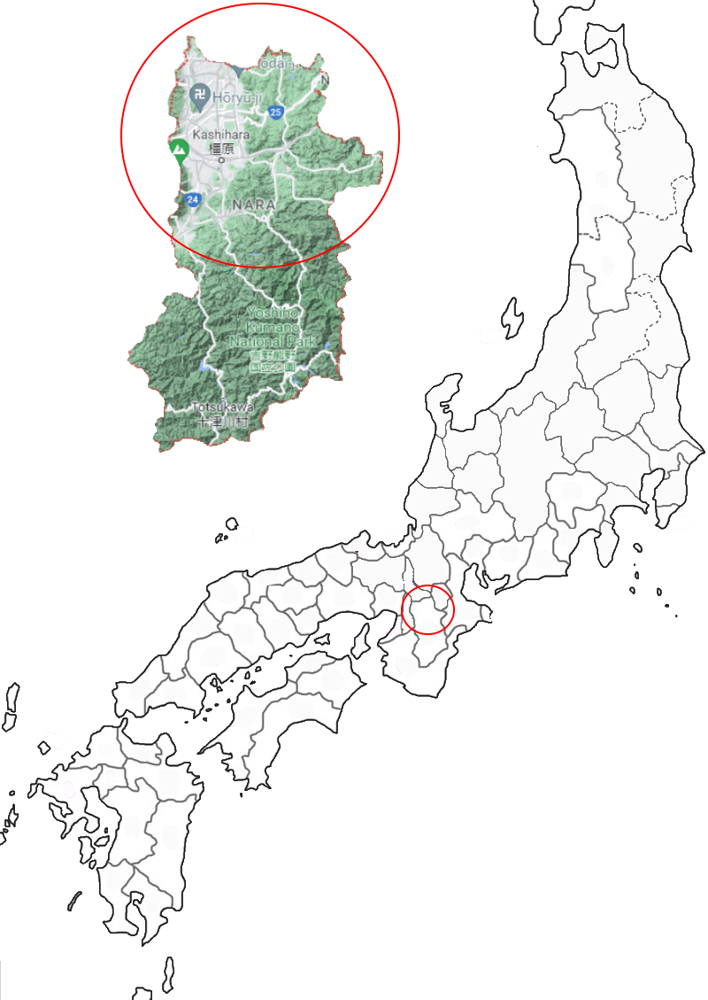

Poem #253 
神な月時雨もいまだふらなくにかねてうつろふ神なびのもり
kaminazuki
shigure mo imada
furanaku ni
kanete utsurou
kamunabi no mori
shigure mo imada
furanaku ni
kanete utsurou
kamunabi no mori
They have yet to fall-
those wintry showers that come
in the Godless Month -
yet already the trees change
at Kamunabi-no-mori.
those wintry showers that come
in the Godless Month -
yet already the trees change
at Kamunabi-no-mori.
Poem #254
ちはやぶる神なび山のもみぢばに思ひはかけじうつろふ物を
chihayaburu
kamunabiyama no
momijiba ni
omoi wa kakeji
utsurou mono o
kamunabiyama no
momijiba ni
omoi wa kakeji
utsurou mono o
I will take great care
not to fix my affections
on autumn foliage
at Kamunabi Mountain-
leaves that will only scatter.
not to fix my affections
on autumn foliage
at Kamunabi Mountain-
leaves that will only scatter.
Poem #284
たつた河もみぢば流る神なびのみむろの山に時雨ふるらし
tatsutagawa
momijiba nagaru
kamunabi no
mimuro no yama ni
shigure fururashi
momijiba nagaru
kamunabi no
mimuro no yama ni
shigure fururashi
Late autumn showers
must be falling at Mimuro,
the divine mountain,
for colored leaves are floating
on the Tatsuta River.
must be falling at Mimuro,
the divine mountain,
for colored leaves are floating
on the Tatsuta River.
Poem #296
神なびのみむろの山を秋ゆけば錦たちきる心地こそすれ
kamunabi no
mimuro no yama o
aki yukeba
nishiki tachikiru
kokochi koso sure
mimuro no yama o
aki yukeba
nishiki tachikiru
kokochi koso sure
"My dress is brocade" -
so I find myself feeling
when of an autumn
I journey on Mimuro,
sacred mountain of the gods.
so I find myself feeling
when of an autumn
I journey on Mimuro,
sacred mountain of the gods.
Poem #300
神なびの山をすぎ行く秋なればたつた河にぞぬさはたむくる
kamunabi no
yama o sugiyuku
aki nareba
tatsutagawa ni zo
nusa wa tamukuru
yama o sugiyuku
aki nareba
tatsutagawa ni zo
nusa wa tamukuru
Since autumn herself
is the traveler crossing
the sacred mountain,
she makes her own offerings
to the Tatsuta River.
is the traveler crossing
the sacred mountain,
she makes her own offerings
to the Tatsuta River.

Background Information
The exact location is unknown, so I circled mountains in the upper half of Yamato. McAuley states that the places its forest could have been were either in the Settsu province, Yamashiro province, or Yamato (see Provinces tab). Within the forest there was a shrine, and white cords of ‘mulberry cloth’ were tied to the trees as worship (McAuley).
Lewis Cook states that it was a mountainous area that housed the Tatsuta Shrine, above the Tatsuta River. Kamunabi means “where gods dwell”, and Cook treats it synonymously with Mimuro Mountain. Maybe caused by its connection to Tatsuta and Mimuro, it is also known for its autumnal leaves
Lewis Cook states that it was a mountainous area that housed the Tatsuta Shrine, above the Tatsuta River. Kamunabi means “where gods dwell”, and Cook treats it synonymously with Mimuro Mountain. Maybe caused by its connection to Tatsuta and Mimuro, it is also known for its autumnal leaves